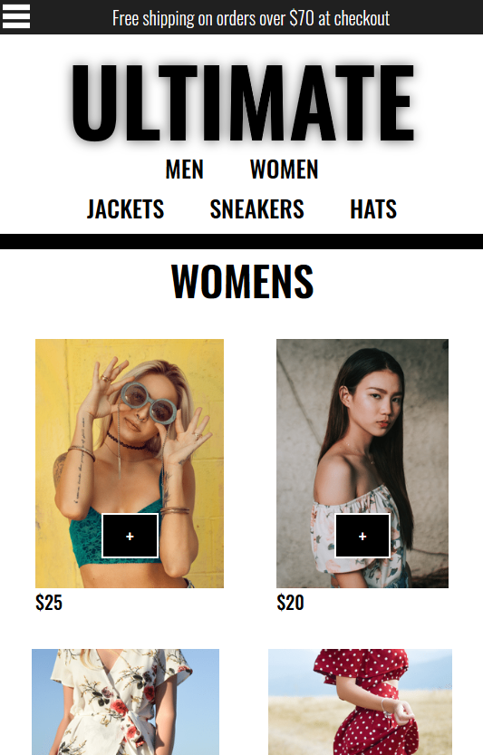
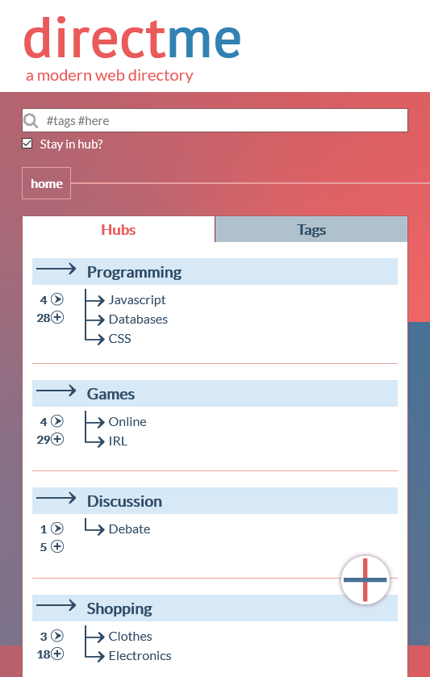
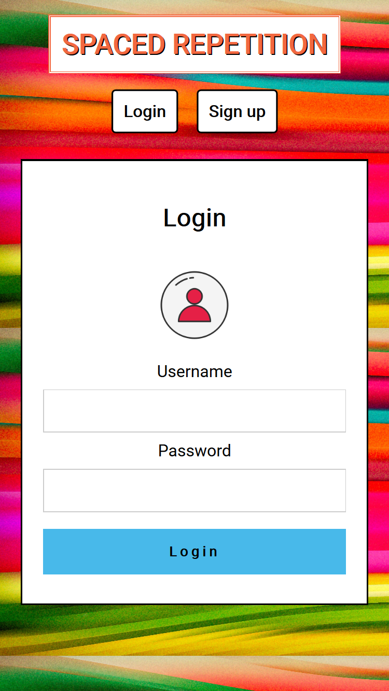

Projects
Now Playing
Now Playing provides users a platform to engage
with others while watching movies. Users are able
to see comments in real-time made by others as
they watch along. Now Playing utilizes the TMDB
API to offer an extended breadth of movies.

tech:
ReactJS, Javascript, HTML5, CSS3,
NodeJS, Express, Knex, APIs, PostgreSQL
Ultimate Clothing
Ultimate Clothing is an e-commerce platform that hosts popular clothing
items for sale. The application utilizes Stripe for payments and Firebase/auth for user authorization and Firebase/firestore for
holding the collection data. Ultimate Clothing utilizes redux for state
management and is a fully functioning e-commerce store.

tech:
ReactJS, Redux, Javascript, Firebase, Stripe,
NodeJS, Express, HTML5, CSS3
DirectMe
Directme is a modern web directory. Users can find new websites and communities
via hubs and tags. Hubs are nested categories that a user can move through until
they find a topic of interest. Tags allow a user to search by keywords to find
listings. Users can contribute listings with any number of imaginable tags. If
the tags match a hub's nested link, the listing will be displayed there as well.

tech:
ReactJS, Javascript, HTML5, CSS3,
NodeJS, Express, Knex, PostgreSQL
El Instrumento
El Instrumento helps a user learn a language using the
Spaced Repetition algorithm which is proven to increase the
rate of learning dramatically. This version contains beginnings to
learn the Spanish language, starting with the English/Spanish
translations of common musical instruments.

tech:
ReactJS, Javascript, HTML5, CSS3,
NodeJS, Express, Knex, PostgreSQL